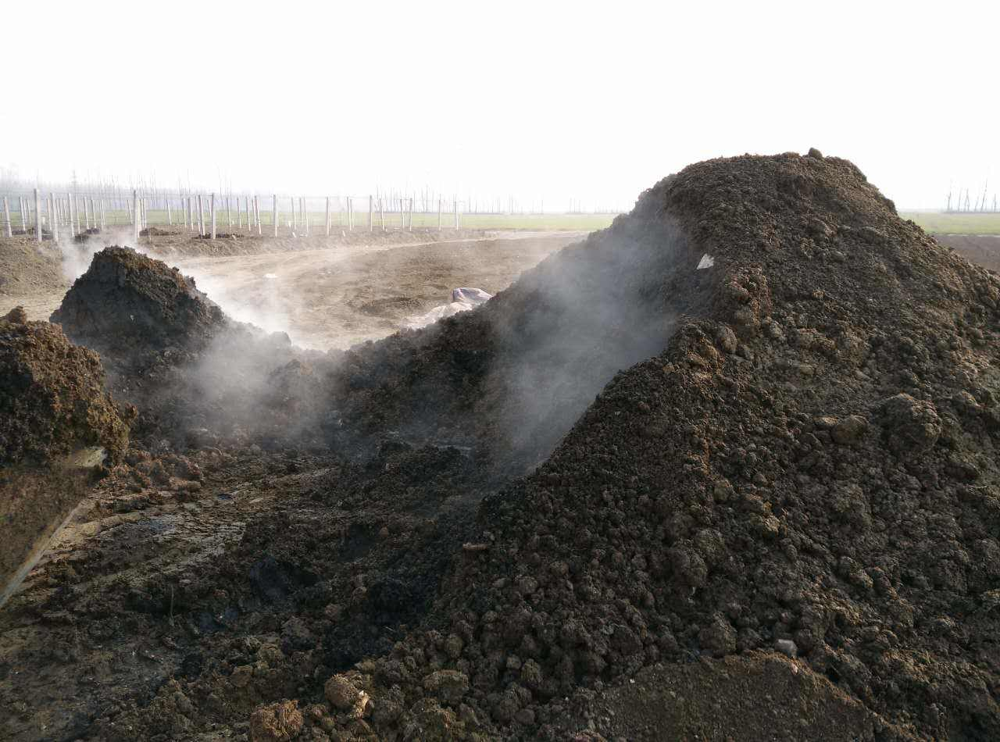
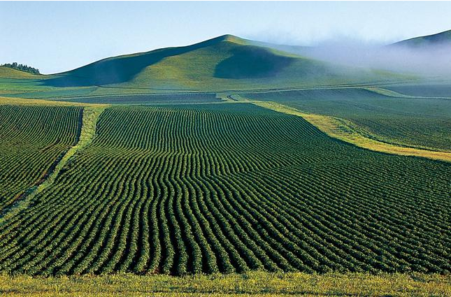

“有机肥主要来源于植物和（或）动物，施于土壤以提供植物营养为其主要功能的含碳物料。经生物物质、动植物废弃物、植物残体加工而来，消除了其中的有毒有害物质，富含大量有益...

“1、多为水分调节问题，首先看水分是否大于60%，如是则加入相当辅料调节到60%拌匀即可，若小于40%则加水或新鲜粪便调节到60%拌匀即可； 2、C/N比失调，会造成温度在32-48度不升温，通...

“好氧堆制发酵过程一般分三个阶段：起始阶段、高温阶段和降温熟化阶段。参与过程的主要微生物种类是细菌、真菌以及放线菌。 1、起始阶段 不耐高温的微生物分解有机物中易讲解的...